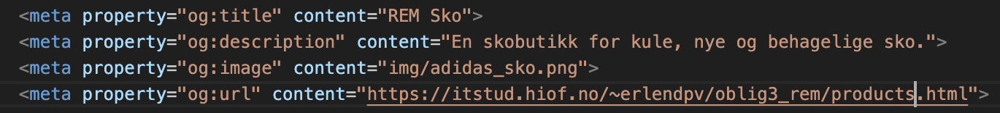

Keyword Analyse
På min nettbutikk så var ideen at den skulle være så minimalistisk som det var realistisk å ha, så er det mer viktig får meg å bruke de mest relevante "keywords". For dette bruker jeg google trend som kan teste forskjellige keywords og se hvilke som er mest populære. Det første var ordet sko eller sneakers og i Norge så dominerte sko over sneakers. det var ikke en region som hadde flere resultat på sneakers enn sko. Men jeg så også noe viktig, i relaterte søk på sneakers så var det mange resultat som relaterte til de type skoene jeg tenkte å ha på min side, så det kunne være lurt å kalle en produktkategori for sneakers. Sko er det mest dominerende ordet for en skobutikk å ha noe som er veldig åpenbart, men på min skobutikk så har vi ikke alle sko så derfor er skomerker viktig. I Norge er det gjevne resultat på merker, det kan sies noe om hvor opptatte vi er av merker. Poenget er at jeg får bedre resultater om jeg har navnene på de relevante skoene tydelig, nike, adidas, hoka, new balance, puma og asics. Nike og adidas var tydelig på toppen av resultatene når det gjalt skomerker. på nettsiden min har en kategori som heter salg som kanskje kunne byttes ut så jeg forsøkte ordet tilbud. Her fikk jeg veldig splittende resultater. Stortsett var det bare noen få prosenter forskjell, men i Nordnorge og Oslo så fikk salg de beste resultatene. Her bestemte jeg meg for å beholde salg mest pågrunn av Oslo side ledende resultater, men det er verdt å merke deg at ordet tilbud kanskje kan brukes i kampanjer i visse regioner.
SEO Analyse
Med å bruke Lighthouse som er en innebygt funksjon i chromium så kan vi teste SEO, UU og best practices. Som vi kan se på bildet ovenfor så har jeg fått god score på SEO og best practices, og ok på accessibility. denne scoren var det samme på alle 3 sidene med en forskjell på 2 eller 3 poeng per side og viser a det er tydelig forbedringspotensial her. For accessibility så får jeg tilbakemelding på den samme på alle 3 sidene mine, det er at jeg ikke har nok kontrast mellom tekst og bakgrunn. Det manglet også tekst for linken til handlekurven.
På best practices var det bare ett punkt som ble nevnt og det var et problem med placeholder bildene jeg hadde. Disse bildene var bare plassholdere for å vise hvordan det ville se ut med bilder. Dette er ikke et problem fordi jeg har ikke tenkt å bruke disse bildene på nettsiden min, men om jeg kan tenke meg at problemet er at dette bildet har jeg ikke lagret hos meg, men det er hentet på en nettside for placeholder bilder.
På SEO så taper jeg open på en mangel av meta tags og at knappene som linker på sidene mine ikke har en mobilvennlig størrelse.
Accessibility Analyse
Wave er et analyseverktøy av WebAim som gjør analyse av accessibility, noe som Lighthouse også gjør, men poenget er at de begge kan ha forskjelldig resultater eller fokuspunkter.
Her fikk jeg bare ett error og det var på mangel av tekst til linken til handlekurven. Dette er det samme som jeg fikk på Lighthouse. Deretter for jeg 7 error for mangel på kontrast mellom tekst og bakgrunn. Jeg fikk også 12 varsler, den ene var at jeg manglet en h1 tag, noe som er veldig viktig for folk som bruker skjermleser. De 11 andre var varsler på at jeg hadde unødvendige mange linker til samme produkt, dette er ikke noe som jeg regner som et problem fordi det er bare er en placeholder til jeg legger inn andre produkter.
ChatGPT Analyse
For denne analysen ba jeg ChatGPT vurdere min code i perspektive til UU og SEO, og gi meg forslag som ikke var kode. ChatGPT starter med UU komplementerte linkingen min og at den var lett å navigere på, men ønsket at jeg hadde noe mer tydelig tekst enn salg og fåreslo noe som siste tilbud. Komenterte også på alt teksten til bildene. For SEO så nevnte ChatGPT at tittelen taggen min var veldig kort og kunne gjerne være mer informativ. Videre fikk jeg foreslåt å legge til meta beskrivelser for å forbedre siden og keywords i alt beskrivelsene mine. Det var alt for det chat GPT hadde å si om min nettside, ettersom den ikke kan "se" netsiden min selv om jeg ga css i tillegg.
Analyse sammenligning
| Lighthouse | Wave av WebAim | ChatGPT |
|---|---|---|
| Dårlig kontrast mellom tekst og bakgrunn | Mangel på h1 tag | Tittel tag for kort, mere beskrivende |
| Handlekurv iconet som linker mangler tekst | handlekurv iconet som linker mangler tekst | Mangler meta data |
| Knappene som linker til andre sider er ikke mobilvennlige | For mange linker til samme produkt | flere keywords |
| Placeholder bildene er live fra et annet nettsted | - | - |
| Mangel av metadata | - | - |
Forbedringsprosessen
For å starte forbedringsprosessen ser jeg på fargene jeg har. Lighthouse Komenterte hvordan siden manglet kontrast. Jeg så tenke at jeg kanskje kunne gå fra den lyse krem fargen på bakgrunn til noe som var kanskje litt mørkere og behagliere for øynene, men på samme tid noe som passet med den "tan" fargen jeg hadde på teksten. Noe av teksten min hadde jeg latt være sort, men jeg gikk for å ha kontinuitet med fargene og endret alt til den "tan" fargen. Som vises på bilde var dette veldig enkelt, det jeg endret bakgrunnsfargen på body og endret teksten på de klassene jeg hadde laget for hver av html sidene.
For å fjerne erroret for der det manglet tekst for linken til handlekurven, så la jeg til teksten "Kurv" til ikon tagen. Ved dette så blir linken til handlekurven større så forhåpentligvis så fikser problemet med at knappene ikke er mobilvennlige å klikke. Bare i tilfellet så lå jeg også in 21px font-size på den andre teksten i navbaren.
Det neste var å laste ned bilder i stedet for å ha de hostet på en annen side. Jeg lastet ned et bilde av sko fra Adidas som ikke da ville være hostet på en annen side. Jeg fjernet da linkene på de andre placeholder produktene så det ikke skulle komme flere advarsler som "redundent links".
For meta dataene så la jeg inn en meta beskrivelse og la til keywords. Jeg la også til en tittel tag som var mer beskrivende enn bare "REM Sko".
Lighthouse og WebAim resultater

I lighthouse har jeg fått god forbedring, det eneste som er feil på SEO er at teksten i navbaren som linker er 94% av optimal størrelse på for mobil. Meta dataen jeg la til var tilstrekkelig, men lighthouse var fremdeles ikke fornøy med kontrasten mellom fargene mine.
For Webaim så mente den også at det var et kontrast problem og fremdeles noen "redundent links" som jeg ikke har fjernet.
Tilgjengelighet
Da jeg testet tastaturtilgjengelighet så kunne jeg enkelt manuverer med tab og enter, dette kan være på grunn av det enkle designet og bruken av rows og colums som da setter opp en logisk navigering. Denne rekkefølgen er best visualisert på WebAim der de også viser hva skjermleserne vil lese opp.
Micro data og rich results
Får å gjøre søkemotoroptimalisering så er viktig å legge inn microdata og deretter teste dem. for å gjøre dette så bruker vi itemscope og itemtype atributtene. Relevante microdata for min nettside er product, offer og review, og disse er alle under schema.org.
Først så linket jeg til schema sin produktside for å få itemprop til å fungere. Det som er så flott med denne prosessen er at googles rich results er at da jeg testet koden min så ga den også forslag/varsler om microdata som manglet. Derfor la jeg inn itemscope for review og offer, og da fikk jeg en full score på rich results.
Metadata for sosiale medier
Tidligere etter analysen så brukte jeg Open Graph Protocol også kjent OG til å konstruere delingskort som sosiale medier bruker når en lenke blir delt. Her hadde jeg lagt inn alt unntatt å linke selve siden som vistes på delingskortet. Her brukte jeg bare bildet av skoen som jeg hadde lastet ned, men om jeg skulle jobbe videre ville jeg laget et bilde av logoen min å brukt. Facebook bruker OG meta data det gjør twitter også, men jeg la inn litt ekstra meta data for twitter.